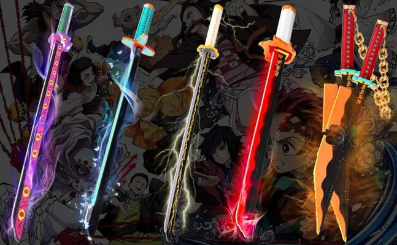
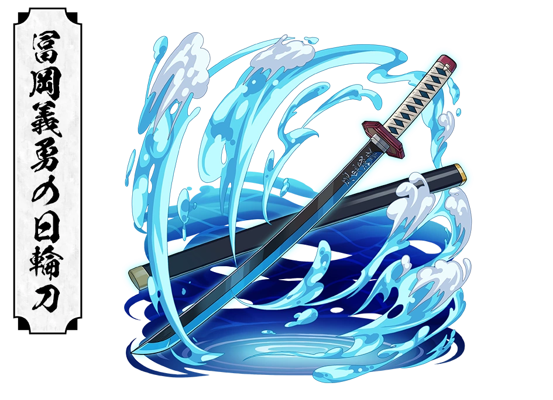
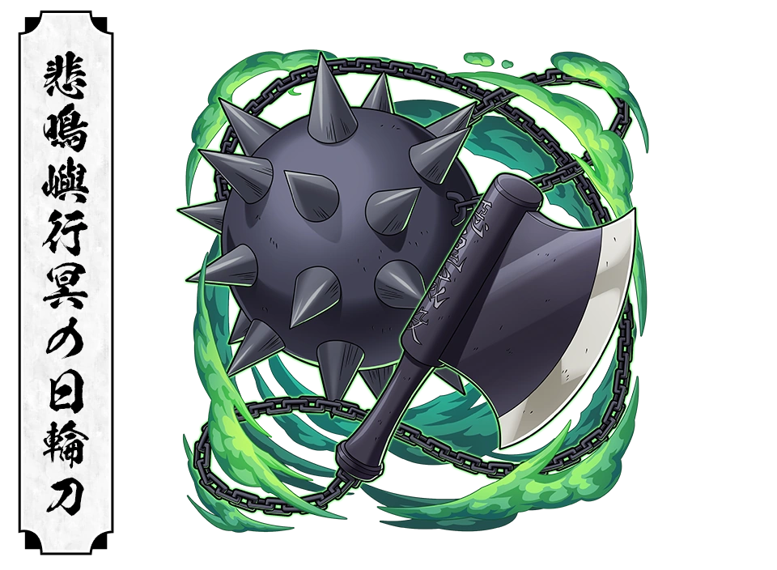
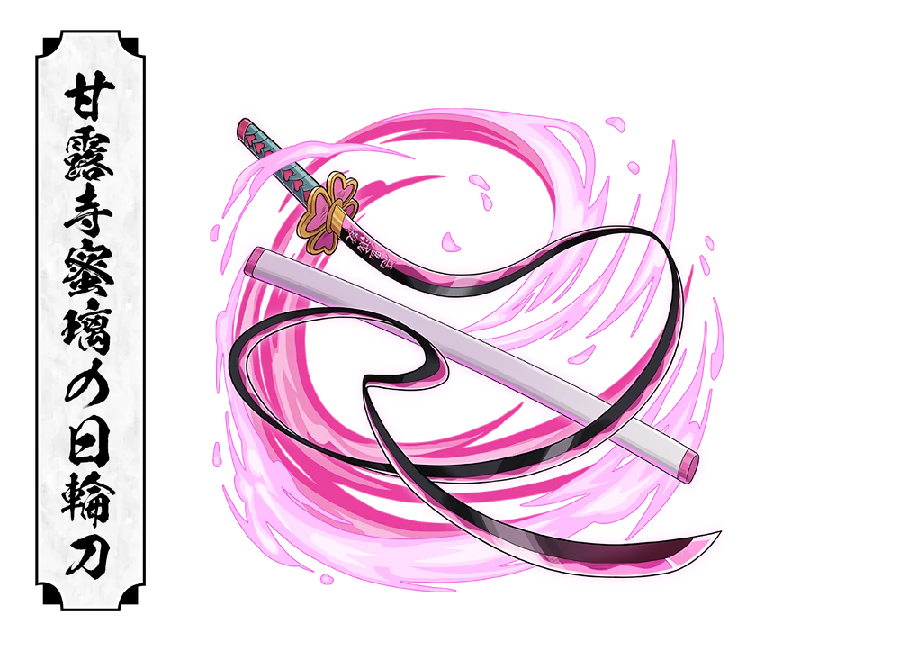
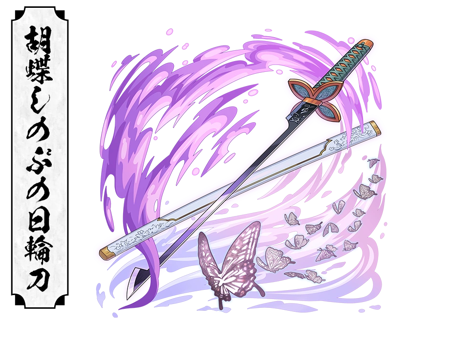

← Back
Nichirin Swords

The only blades capable of beheading demons
Overview
Nichirin Swords are the signature weapons of the Demon Slayer Corps. Forged from a rare one that absorbs sunlight throughout the year, these blades are one of the few weapons capable of permanently killing demons. Every Demon Slayer receives a Nichirin Sword after completing the Final Selection, making it both a weapon and a symbol of their duty
Origin
Nichirin Swords are forged using Scarlet Crimson Iron Sand and Scarlet Ore, two rare material collected from mountains that remain exposed to sunlight all year. Becasue demons are vulnerable to sunlight, these materials give nichirin Blades the power to destroy them.
The swrods are crafted by skilled swordsmith who dedeicate their lives producing weapons for the Demon Slayer Corps
How They Work
Unlike Ordinary swords, Nichirin Blades can permanently kill demons by cutting off their hands. Their unique material stores the power of sunlight, making them effective against creatures that would normally regenerate from almost any injury.
Every sword is carefully forged to withstand intense Battles against powerful demons
Color Changing Blades
When a Demon Slayer first holds their Nichirin Sword, the blade changes color according to the user's personality, abilities, and breathing style. This unique feature gives each swordsman a blade that reflects their fighting spirit
Known Blade

Black
Used By Tanjiro
A mysterious and extremly rare blade color whose true meaning is largely unkown

Blue
Used by Giyu Tomioka and other Water Breathing Users
Represents calmness, adaptability, and flowing attacks

Red
Used by Kyojuro Rengoku
Symbolizes passion, determination, and overwhelming offensive power

Yellow
Used by Zenitsu Agatsuma
Represents speed and lighting fast sword techniques

Green
Used by Sanemi Shinazugawa
Reflects unpredictable movements and fierce attacks

Grey
Used by Gyomei Himejima
Associated with immense strength and unwavering defense

White
Used by Muichiro Tokito
Represents Calmness, precision, and the mysterious nature of Mist Breathing

Pink
Used by Mitsuri Kanroji
Symbolizes flexibility, elegence, and incredible speed

Lavender
Used by Shinobu Kocho
Represents grace and techniques focused on poision rather than decapitaion
Crimson Red Nichirin Blade
A Nichirin Sword can temporarily turn bright crimson during battle. Crimsion Red Blades greatly slow a demon's regeneration and are especially effective against powerful Upper Rank Demons and Muzan
Several Hashira awaken Crimson Red Blades during the final battle
Swordsmith Village
Every Nichirin Sword is crafted in the secret Swordsmith Village, where talented swordsmiths work in complete secrecy to protect the Demon Slayer Corps. The village remains hiden from the outside world to prevent demons feom discovering it's location
Trivia
Nichirin Swords are also Known as Color Changing Swords
Every Blade is forged from sunlight absobing materials
Only Nichirin weapons can permanently behed most demons
Shinobu uses a specially designed Nichirin Sword because she lacks the strength to decapitate demons
Genya Mainly fights with a Nichirin Shotgun alongside his blade
Go Back =>